Part 47-02
Sub-parts
- Interior Mouldings, Package Tray Trim Panels, Carpets, Consoles — 47-02-10
- Interior Mouldings — 47-02-10a
- Package Tray Trim Panel—All Except Maverick, Thunderbird, Continental Mark III and Lincoln Continental — 47-02-10b
- Package Tray Trim Panel—Maverick — 47-02-10c
- Package Tray Trim Panels—Thunderbird — 47-02-10d
- 2-Door — 47-02-01
- 4-Door — 47-02-01a
- Package Tray Trim Panels—Continental Mark III — 47-02-10e
- Package Tray Trim Panels—Lincoln Continental — 47-02-10f
- Carpets — 47-02-12
Component Index
| COMPONENT INDEX Applies to Models As Indicated | All Models | Ford | Mercury | Meteor | Cougar | Fairlane | Falcon | Maverick | Montego | Mustang | Lincoln- Continental | Thunderbird | Continental-Mark III |
|---|---|---|---|---|---|---|---|---|---|---|---|---|---|
| CARPETS | 02-12 | _ | |||||||||||
| CONSOLES | 02-13 | 02-13 | 02-13 | 02-13 | 02-13 | N/A | N/A | 02-13 | 02-13 | 02-13 | 02-13 | 02-13 | |
| INTERIOR MOULDINGS | . 02-10 | - | |||||||||||
| TRIM PANELS. | |||||||||||||
| Door | 02-01 | 02-01 | 02-01 | 02-03 | 02-01 | 02-01 | 02-01 | 02-01 | 02-03 | 02-05 | 02-04 | 02-04 | |
| Package Tray | 02-10 | 02-10 | 02-10 | 02-10 | 02-10 | 02-10 | 02-10 | 02-10 | 02-10 | 02-12 | 02-10 | 02-12 | |
| Quarter | 02-05 | 02-05 | 02-05 | 02-05 | 02-05 | 02-05 | 02-05 | -02-05 | 02-05 | 02-07 | 02-06 | 02-06 |
A page number indicates that the item is for the vehicle(s) listed at the head of the column.
N/A indicates that the item is not applicable to the vehicle(s) listed.
1 Door Trim Panels
Ford, Meteor, Mercury, Maverick, Falcon, Fairlane and Montego
Basically, all door trim panels on these car lines are retained in the same manner. One removal and installation procedure will cover all of them.
Removal
- Unscrew and remove the door latch control knob.
- Pry the window regulator retaining screw access covers from the window regulator, handles (Fig. 1). Remove the handle retaining screw and the handle.
- Remove any screws which retain the trim panel to the inner panel such as armrest retaining screws, and moulding screws.
- Remove the screw which retains the door remote control handle to the latch mechanism and remove the remote control handle assembly.
- FRONT DOORS: Remove the remote control mirror bezel nut (if so equipped).
- With a putty knife, pry the trim panel retaining clips (Fig. 2) loose from the door inner panel.
- If the door has power windows, disconnect the switch lead wires from the switch and remove the trim panel. If necessary, carefully loosen the door watershield.
Installation
-
Place a daub of AB-19560-A sealer over each retaining clip hole to seal the retaining clips when they are pushed into the door. Also, apply this sealer around the door handles, window regulator shafts and other existing holes. Fasten the watershield to the inner panel with sealer. Be certain that the watershield is securely attached to the door inner panel.
-
If the trim panel is to be replaced, transfer the power window switch, ornamentation (if so equipped), and the retaining clips from the old trim panel to the new one. Also transfer the door pull handle (fastened by 2 pop rivets).
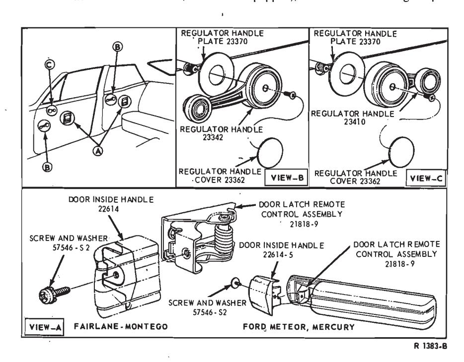
Fig. 1 — Typical Door and Window Regulator Handle Installation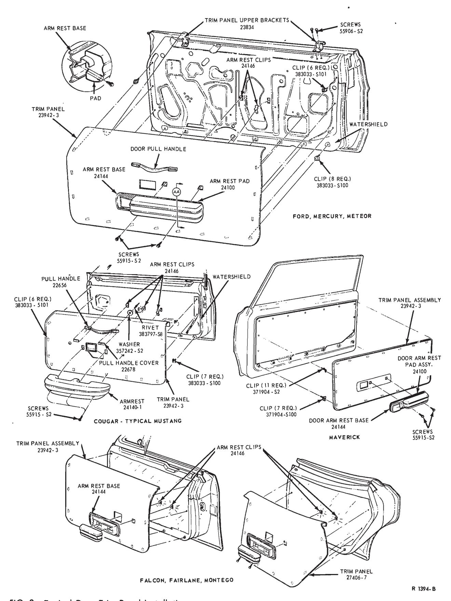
Fig. 2 — Typical Door Trim Panel InstallationsThe door pull handle pop rivet covers (Fig. 2) are cemented in place. To remove the door pull handle pop rivets, carefully pry the covers away from the handle. Position the pull handle to the new trim panel and install the pop rivets. Clean old cement from the covers with naptha. Use a 1 3/4 x 3/8 inch tape such as 3M No. Y9122 and cement the covers back in place.
-
Position the trim panel to the door and connect the power window switch wires to the switch (if so equipped). Be sure that all of the trim panel retaining clips are installed in the trim panel. Place the top edge of the trim panel over the trim panel upper brackets, and push the clips into place in the door inner panel (Fig. 2).
-
Position the door remote control handle to the latch mechanism and install the retaining screw.
-
Position the armrest to the door and install the armrest retaining screws.
-
FRONT DOORS: Install the remote control mirror bezel nut (if so equipped).
-
Position the window regulator handles on their shafts. Install the handle retaining screws and press the retaining screw access covers into place. With the windows closed, the handles should be positioned as shown in Fig. 1.
-
Install the door latch control knob.
Cougar and Mustang
Removal
- Remove the retaining screw from the window regulator handle and remove the handle from the shaft (Fig. 1).
- Remove the three retaining screws from the armrest assembly and remove the assembly.
- Remove the two retaining nuts and remove the door remote control handle from the door.
- On Mustang vehicles, remove the trim panel retaining screws. With a putty knife, pry the trim panel retaining clips out of the door inner panel and remove the panel from the door. Carefully remove the watershield, if necessary.
Installation
-
Place a daub of sealer over each trim retaining clip hole to seal the retaining clips when they are pushed into the door. Also, apply sealer around the window regulator shaft hole and other existing holes.
-
Fasten the watershield to the inner panel.
-
If the trim panel is being replaced, transfer the retaining clips to the new panel. On Cougar vehicles, transfer the door pull handle to the new panel.
The door pull handle pop rivet covers (Fig. 2) are cemented in place. To remove the door pull handle pop rivets, carefully pry the covers away from the handle. Position the pull handle to the new trim panel and install the pop rivets. Clean old cement from the covers with naptha. Use a 1 3/4 x 3/8 inch tape such as 3M No. Y9122 and cement the covers back in place.
-
Position the trim panel to the door inner panel and watershield and push the retaining clips into their holes. On Mustang vehicles, install the trim panel retaining screws.
-
Position the armrest assembly and install the three retaining screws.
-
Position the door remote control handle to the door and install the two retaining nuts.
-
Position the window regulator on its shaft and install the retaining screw.
Thunderbird and Continental Mark III
Removal
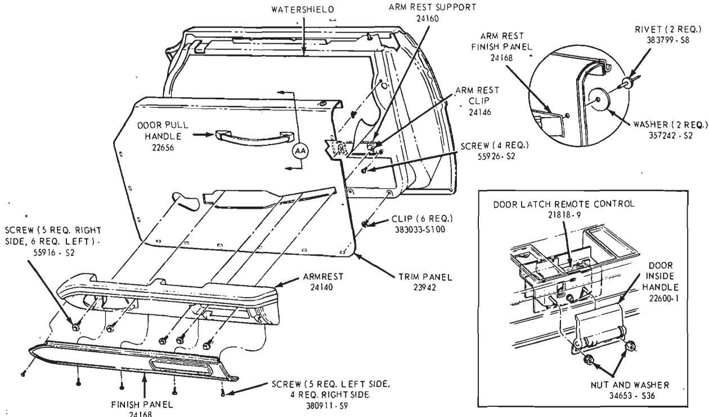
Fig. 3 — Door Trim Panel Installation—Thunderbird and Continental Mark III
- Unscrew the knob from the door lock control.
- Remove the window regulator handle retaining screw access cover. Remove the handle retaining screw and the handle (Fig. 1).
- Remove the mirror remote control bezel nut.
- Remove the armrest finish panel attaching screws, disconnect the light wire, and remove the finish panel from the armrest (Fig. 3).
- If so equipped, remove the speaker from the armrest (4 screws and disconnect 1 wire).
- Remove the armrest attaching screws, separate the armrest from the two attaching clips, disconnect the switch wires (and vacuum hoses if so equipped) and remove the armrest from the trim panel.
- Remove the attaching nut and washer assemblies, and then remove the door inside handle from the door lock remote control mounting bracket studs
- With a putty knife or similar tool, pry the trim panel retaining clips from the door inner panel and remove the trim panel.
Installation
-
If the trim panel and/or the armrest is to be replaced, transfer the pull handle (2 pop rivets), retaining clips, finish panel, trim mouldings etc., to the new assembly. If the watershield has been removed, be sure to position it correctly in place before installing the trim panel. Be sure that the two armrest retaining clips are properly positioned on the door inner panel. If they have been dislodged, they must be reinstalled before installing the watershield.
-
Position the trim panel to the door inner panel, and snap the retaining clips in place (Fig. 4).
-
Position the door inside handle on the remote control mounting bracket studs, and secure with the attaching nut and washer assemblies.
-
Position the armrest assembly to the door, route the mirror remote control through the armrest, and install the bezel nut. Connect the switch wires (and vacuum hoses if so equipped) and fasten the armrest to the two retaining clips at the door inner panel. Install the armrest retaining screws.
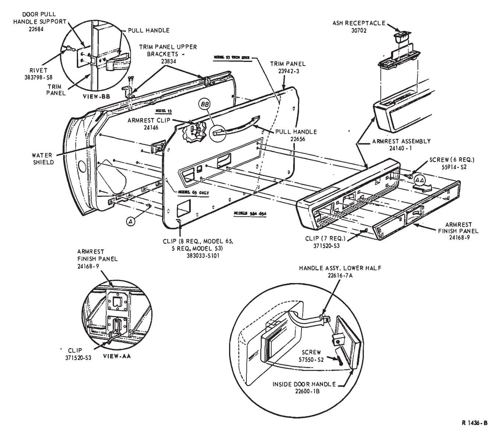
-
Install the speaker (if so equipped) to the armrest (4 screws and connect 1 wire).
-
Position the finish panel to the armrest, connect the light wire and secure with the retaining screws.
-
Position the window regulator handle on its shaft. Install the handle retaining screws. Press the handle retaining screw access covers into place.
-
Screw the knob back onto the door lock control.
Lincoln Continental
Since all door panels are retained in the same manner, one basic procedure will cover all models.
Removal
- Remove the door lock control knob.
- Remove the door latch inside remote control handle (1 screw) from the latch mechanism.
- Remove the mirror remote control bezel nut.
- Remove the finish panel from the armrest by prying the retaining clips loose with a putty knife or similar tool (Fig. 4).
- Remove the armrest retaining screws, separate the armrest from the trim panel, and disconnect the switch and courtesy light wiring (and vacuum hoses if so equipped). Remove the armrest from the trim panel.
- With a putty knife or similar tool, pry the trim panel retaining clips loose from the door inner panel and remove the trim panel assembly.
- If the water shield has to be removed, the armrest mounting bracket (2 screws) and the speaker assembly (on disconnect and retaining screws) will have to be removed first. Carefully remove the water shield from the door inner panel.
Installation
-
If the trim panel is to be replaced, transfer the retaining clips and the door pull handle assembly (fastened with pop rivets) to the new trim panel. If the watershield has been removed, position it correctly in place and install the speaker (retaining screws and one disconnect) and the armrest mounting bracket (2 screws) before installing the trim panel.
-
Position the trim panel to the door and snap the retaining clips into their holes in the door inner panel (Fig. 4).
-
If the armrest is to be replaced, transfer the switch and housing assembly (8 retaining screws) and the courtesy light assembly (2 retaining screws) to the new armrest.
Position the armrest to the door and route the mirror remote control through the armrest. Connect the switch and courtesy light wires and install the mirror remote control bezel nut. Install the armrest retaining screws.
-
Position the armrest finish panel to the armrest and snap the retaining clips into place.
-
Install the door latch remote control handle (1 screw), and install the knob on the inside door lock control.
Quarter Trim Panels
Ford, Meteor, Mercury, Falcon, Fairlane and Montego
Basically, all quarter trim panels are retained in the same manner. In view of this, one removal and installation procedure will cover all models.
- Remove the rear seat cushion and seat back from the vehicle.
- Remove the window regulator handle, if so equipped. Pry the handle retaining screw access cover from the handle and remove the retaining screw (Fig. 1).
- Remove any screws retaining the trim panel to the inner panel, such as the armrest retaining screws. On some models, the armrest retaining screws are covered by an armrest lower finish panel. For access to the screws, carefully pry the finish panel out of the armrest.
- Remove the trim panel attaching screw(s). Then, unclip the trim panel retaining clips and pull the trim panel from the quarter panel (Fig. 5). Disconnect the power window switch wires (if so equipped) from the switch.
- Position the trim panel to the quarter panel and connect the power window wires, if so equipped. Then, snap the retaining clips in the holes.
- Install the trim panel attaching screws.
- Install the armrest and window regulator handle, if so equipped.
Cougar and Mustang—Except Model 63
First remove the rear seat cushion and back. Pry off the regulator handle cover for access to the handle retaining screw and remove the handle.
On Model 76, remove the panel retaining screws.
On Model 65, remove the panel retaining screws and using a putty knife, pry the retaining clips out of the inner panel (Fig. 6).
Disengage the trim panel from the upper retainers and remove the panel. Carefully loosen the watershield if it has to be removed for access to the regulator mechanism.
If the trim panel is being replaced, transfer any parts to the new panel.
When installing the panel, apply sealer over the retaining clip and screw holes and around the regulator shaft and other existing holes in the inner panel.
Mustang—Model 63
Remove the rear seat cushion and swing the seat back assembly forward to the floor position. Remove the retaining screws from the rear floor section at the latch catches. Remove the screws and washers that attach the rear floor section to the seat back hinges. Remove the seat back and rear floor section (Fig. 7).
Remove the retaining screws and the upper rear quarter trim panel. Remove the quarter window windlace cap (one screw). From the lower front quarter trim panel, remove the retain- ing screws along the top and front, and the three bolts at the bottom; then, remove the trim panel (Fig. 8).
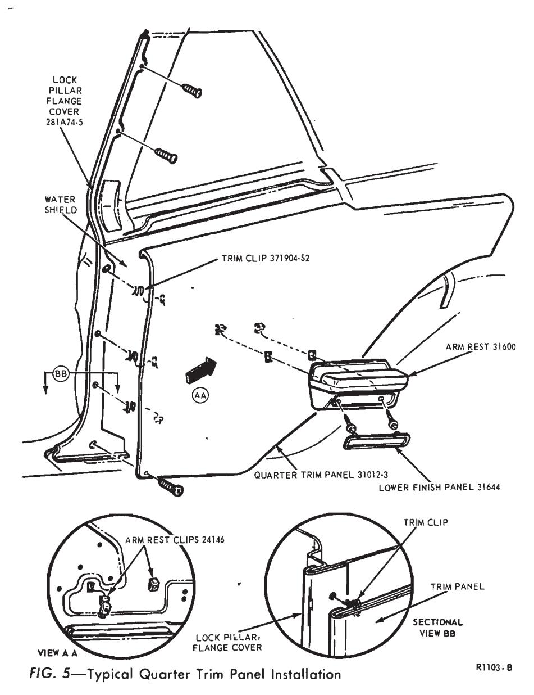
Fig. 5 — Typical Quarter Trim Panel Installation
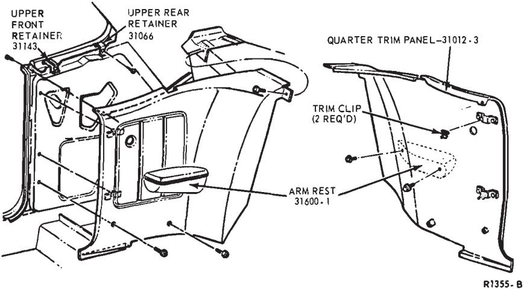
Fig. 6 — Quarter Trim Panel—Cougar and Mustang Typical Model 65
When installing the lower front panel, torque the three bottom retaining bolts to 6-11 ft-lbs and the one bolt at the rear lower corner to 7-11 ft-lbs.
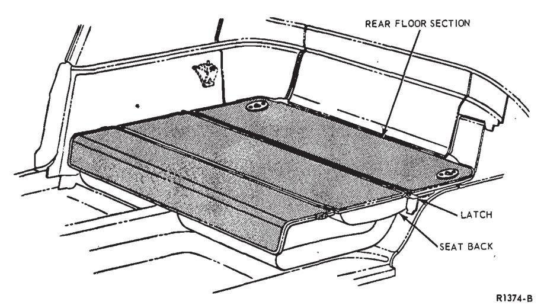
Fig. 7 — Rear Seat and Auxiliary Floor—Mustang Model 63
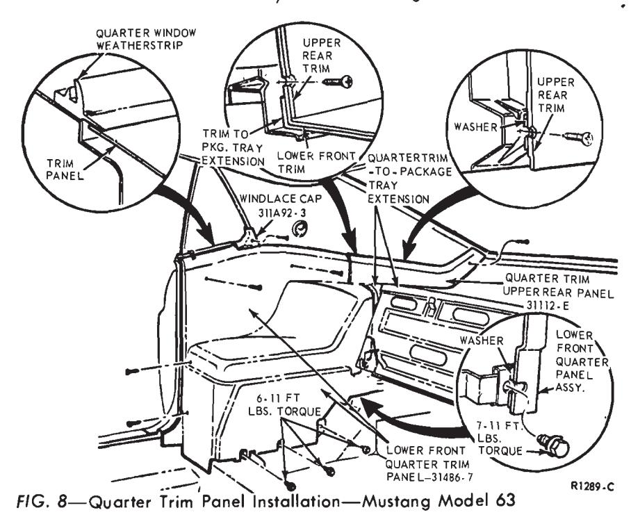
Fig. 8 — Quarter Trim Panel Installation—Mustang Model 63
Thunderbird and Continental Mark III
Removal
- Remove the rear seat cushion from the vehicle.
- Remove the seat back from the vehicle after removing the screw and washer assemblies at the bottom of the seat back. Refer to procedure in Part 41-03.
- Remove the attaching screw and remove the joint cover from the front and rear roof side inner mouldings (Figs. 10 and 11).
- Remove the side inner rear pad (moulding) by disengaging the retaining clip (Fig. 11).
- Remove the two stud fasteners and remove the finish panel from the armrest (Fig. 9).
- Remove the armrest attaching screws and armrest from the quarter panel (Fig. 9).
- On Thunderbird only, remove the upper finish panel (3 screws).
- Remove the three trim panel attaching screws, remove the trim panel, and disconnect the switch wires (Fig. 9).
Installation
-
Connect the switch wires, position the trim panel to the quarter panel and secure with three attaching screws. Be sure the trim panel spacer is in place (Fig. 9).
-
On Thunderbird only, install the upper finish panel (3 screws).
-
Position the armrest to the two screw retaining clips on the quarter panel and secure with attaching screws (Fig. 9).
-
Install the finish panel to the armrest with the two stud fasteners (Fig. 9).
-
Install the side inner rear moulding. Snap into position with the retaining clip (Fig. 10).
-
Install the joint cover over the front and rear inner side mouldings and secure with the attaching screw (Fig. 10).
-
Install the rear seat back and seat cushion.
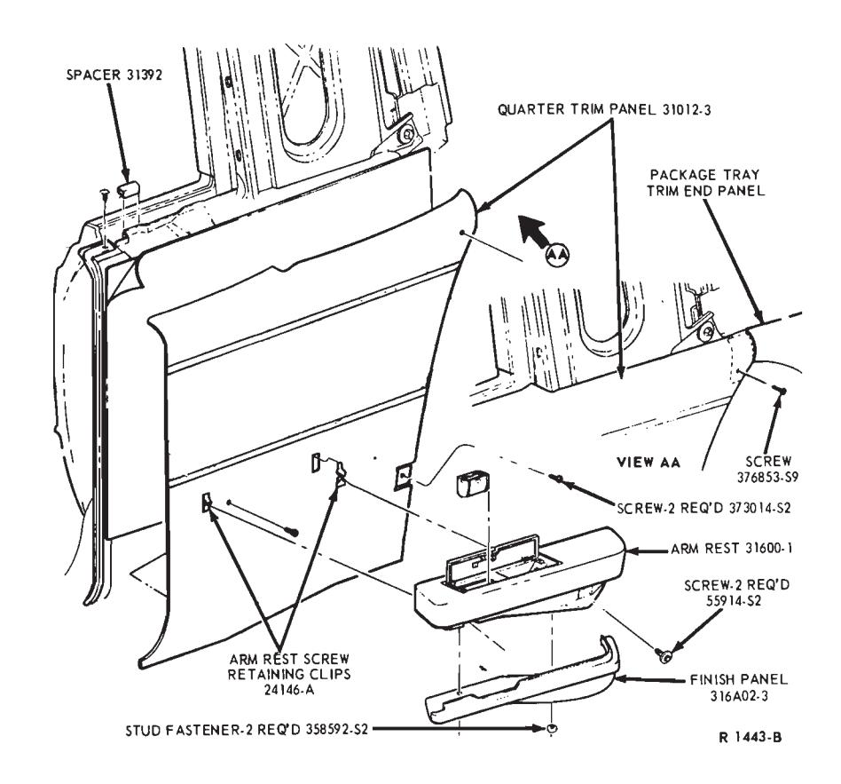
Fig. 9 — Quarter Trim Panel—Continental Mark III Shown, Thunderbird Typical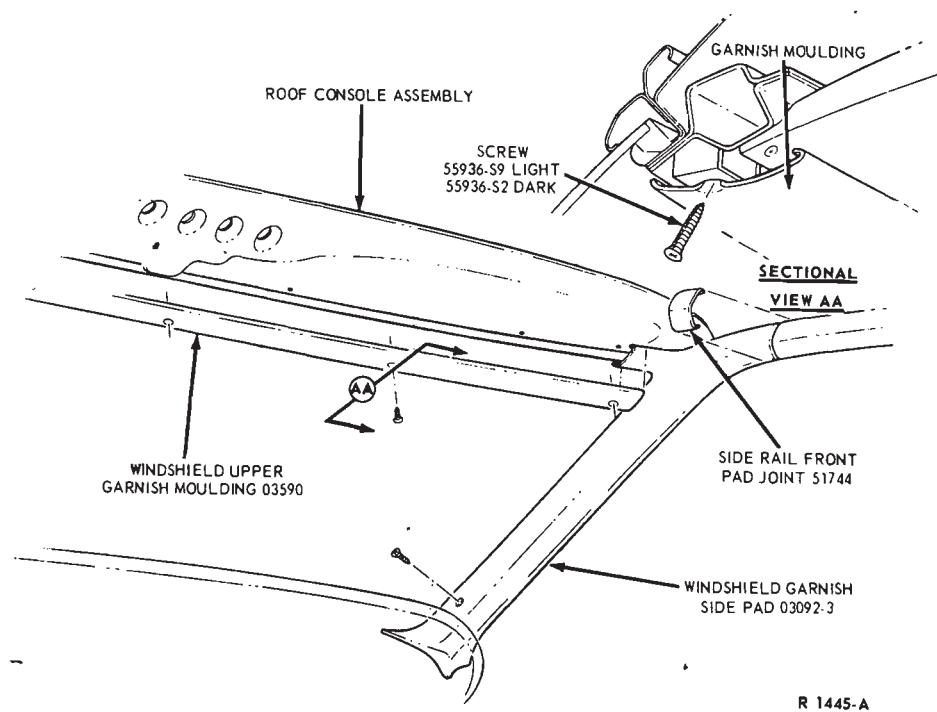
Fig. 10 — Typical Windshield Garnish Moulding Installation—Continental Mark III Shown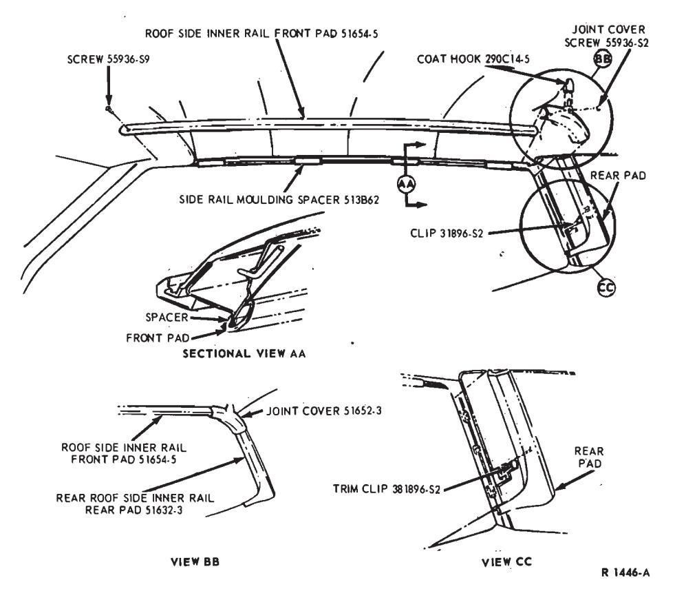
Fig. 11 — Typical Roof Side Inner Moulding Installation—Continental Mark III Shown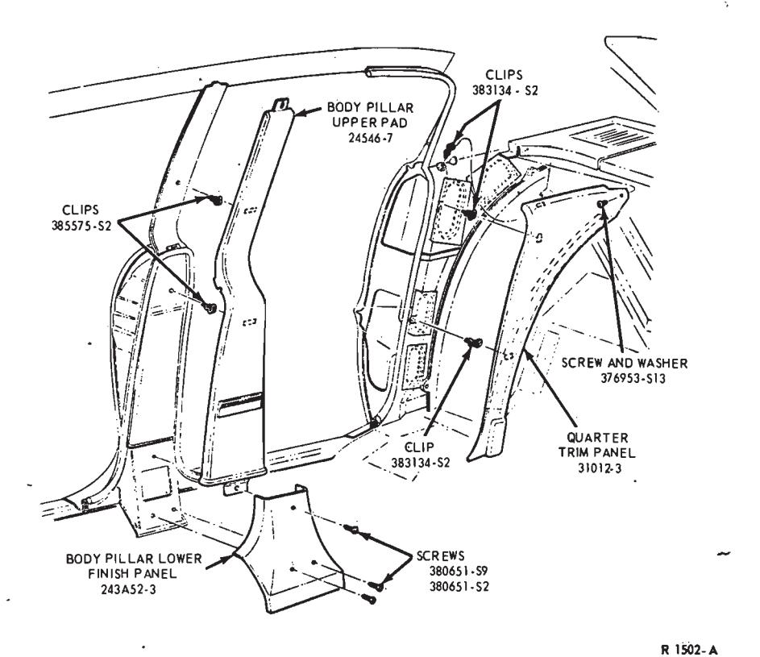
Fig. 12 — Typical Four Door Center Pillar and Quarter Trim Panels—Continental Mark III and Thunderbird Shown
Lincoln Continental
Removal
- Remove the rear seat cushion and seat back.
- Remove the back belt rear garnish moulding.
- Remove the back belt rear corner garnish moulding.
- Pull the quarter pillar windlace away from the quarter pillar.
- Remove the quarter trim panel retaining screws and washer and remove the trim panel.
Installation
- Install the quarter trim panel and windlace.
- Install the back belt rear garnish corner moulding.
- Install the back belt rear garnish moulding.
- Install the rear seat back and seat cushion.
Center Pillar and Quarter Trim Panels—Four Door Models
Before removing the center pillar trim panel it is necessary to remove the roof side inner front moulding in order to free the upper end of the panel. Remove the retaining screws and the pillar lower trim panel. Disengage the retaining clips and remove the pillar upper trim panel (Fig. 12).
Before removing the quarter panel, remove the rear seat and seat back for access. Remove the retaining screw(s), disengage the retaining clips, and remove the panel.
If either of these panels are being replaced, transfer the clips and other removable hardward to the new panel.